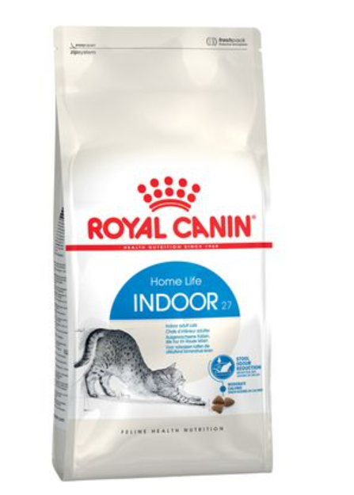
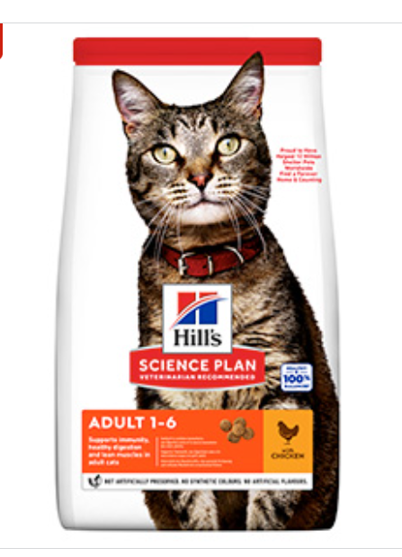
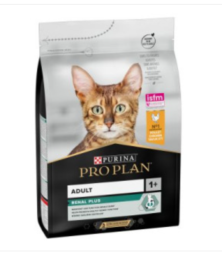
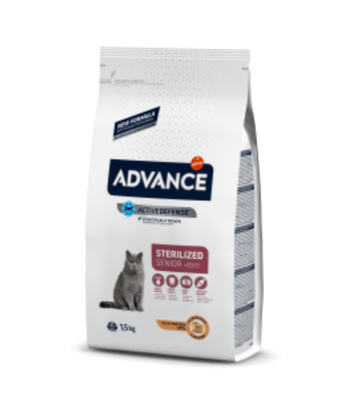
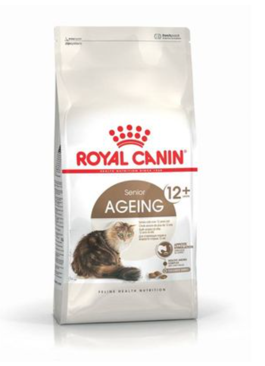
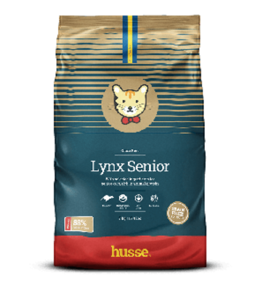

Cat & Kitten Feeding
How Much Should I Feed My Cat?
How much to feed your cat depends on several factors, including her age, lifestyle and even the type of food.
Whether you’re new to cat ownership or you’ve changed your cat’s food, figuring out how much she needs to eat each day isn’t as straightforward as you might think.
Determining How Much to Feed a Cat
Different cats have different nutritional needs based on their size, life stage and more. Here are some factors to consider when deciding how much food your cat should eat.
- Age & Life Stage: Kittens have different nutritional needs than adults or senior cats. Pregnant or nursing cats also have different needs.
- Weight: “If your cat is not at her ideal body condition, you may need to adjust what and how much you feed her,” says Dr. Callie Harris, DVM.
- Activity Levels: Cats who are active and playful throughout the day may need more calories than those who prefer to spend their time napping.
- Indoor vs. Outdoor: Indoor cats may not get as much exercise as an outdoor cat would, so they need fewer calories. Outdoor (or indoor/outdoor) cats living in regions with cold winters may need more food in the cold months.
The best way to determine how much food your cat needs is to talk with your veterinarian. They can tell you how much food your cat needs based on the above factors.
Cat & Kitten Feeding
How Much Should I Feed My Cat?
How much to feed your cat depends on several factors, including her age, lifestyle and even the type of food.
Whether you’re new to cat ownership or you’ve changed your cat’s food, figuring out how much she needs to eat each day isn’t as straightforward as you might think.
Determining How Much to Feed a Cat
Different cats have different nutritional needs based on their size, life stage and more. Here are some factors to consider when deciding how much food your cat should eat.
- Age & Life Stage: Kittens have different nutritional needs than adults or senior cats. Pregnant or nursing cats also have different needs.
- Weight: “If your cat is not at her ideal body condition, you may need to adjust what and how much you feed her,” says Dr. Callie Harris, DVM.
- Activity Levels: Cats who are active and playful throughout the day may need more calories than those who prefer to spend their time napping.
- Indoor vs. Outdoor: Indoor cats may not get as much exercise as an outdoor cat would, so they need fewer calories. Outdoor (or indoor/outdoor) cats living in regions with cold winters may need more food in the cold months.
The best way to determine how much food your cat needs is to talk with your veterinarian. They can tell you how much food your cat needs based on the above factors.
How Much Should a Cat Eat a Day?
Dry and wet cat food differ in calories as well as portion sizes. You’ll want to ensure you’re feeding an appropriate amount of food, whether you feed dry, wet or a combination of both. The label on the food packaging can give you a general idea of how much food your cat needs. The recommendations may include ranges, so you’ll need to figure out where your cat fits within those ranges. You can always adjust to meet your cat’s needs.
If you have questions about how much of a particular food to feed your cat, you can also visit the manufacturer’s website or call them directly. As always, your veterinarian can also help you navigate how much to feed your cat.
Feeding recommendations are required on all cat food packaging, but they don’t all look the same. Pay close attention to the chart on your cat’s food label to ensure you’re feeding her the right amount based on her age and weight.
Here’s a sample cat feeding chart, similar to what you’ll find on cat food labels:
| Weight (lbs) | Dry Food Amount (cups) |
|---|---|
| 5 to 9 | 1/3 to 2/3 |
| 10 to 14 | 3/4 to 1 |
FAQs about feeding your cat
What is a cat's natural diet?
A cat’s natural diet is one rich in meat or fish, because a cat is a true carnivore. In order to replicate such a diet for domestic cats, cat food should contain natural sources of essential amino acids, such as taurine, and be free from artificial flavours or additives, and other such nasties.
What is the best natural wet cat food?
The best natural wet cat food should mirror the freshly caught prey a cat would naturally enjoy in the wild. The cat will often leave behind the bits it does not want such as intestines, head and other derivatives. At Encore we remove the hard work for your cat by only using the finest cuts of meat in our wet foods. All our cuts of meat have come from animals which been veterinary inspected and passed fit for human consumption. So, when feeding Encore, you can be assured that you are feeding the best you can give to your cat.
How many cat treats should your feed your cat?
Treats should not make up more than 20% of your cat’s daily diet. You can feed as many treats as you like as long as you do not exceed this ratio. Unlike many other treats that include additional sugars and additives, Encore Tuna loins contain only one ingredient- Tuna, making them a tasty and healthy treat for your cat.
What does complementary cat food mean?
What is a cat's natural diet?
A cat’s natural diet is one rich in meat or fish, because a cat is a true carnivore. In order to replicate such a diet for domestic cats, cat food should contain natural sources of essential amino acids, such as taurine, and be free from artificial flavours or additives, and other such nasties.
When should I switch my kitten to adult cat food?
Kittens should be switched to adult cat food when they reach maturity, usually around one year of age. However, this can vary depending on the breed, so it's best to consult with a vet.
Can I feed my senior cat the same food as my adult cat?
Senior cats have different nutritional needs than younger adults. They may need food with lower calorie content to prevent weight gain and supplements for joint health. There are specially formulated senior cat foods that you should consider for your aging cat.
What type of food should I feed a kitten?
Kittens require food that is high in protein and fat to support rapid growth and development. Look for kitten-specific formulas that cater to this life stage's nutritional needs. It's essential to feed them small, frequent meals throughout the day.
The Difference Between Puppy, Adult and Senior Cat Food
Cats at different life stages have distinct nutritional requirements, and their diets should be formulated to match these specific needs.
-
Kittens (Under 1 year)
Kitten Food: Kittens need food that's high in protein and calories to support their rapid growth and development. Their diet should include more amino acids, such as taurine, which are crucial for heart and eye health. Kitten food is usually richer and contains more vitamins and minerals in specific proportions to aid in their development.
Adult Cats (1-7 years):
Adult Cat Food: Adult cats require a well-balanced diet that maintains their health, energy, and body condition. This usually means a stable intake of proteins, fats, and carbohydrates, as well as essential vitamins and minerals. Portion control is crucial to prevent weight gain. Both dry and wet foods are suitable for adult cats, depending on their preference and hydration needs.
Here are some recommended cat food options for adult cats that are formulated to meet their nutritional needs for maintaining optimal health and vitality:
Royal Canin Indoor
Cick here to buyHill's Science Plan Dry Adult Cat Food Chicken 1.5kg
Cick here to buyPro Plan Adult Cat With Chicken 1.5kg
Cick here to buy-
Senior Cats (7+ years):
Senior Cat Food: cats age, their metabolism slows down, and they may become less active. Senior cat foods are generally lower in calories but still provide all the necessary nutrients, with an emphasis on easy digestibility and joint support ingredients like glucosamine. Additionally, these foods often have supplements to support kidney function and other common health concerns in older cats.
Sanabelle Senior 400g
Cick here to buyRoyal Canin Ageing 12+
Cick here to buyLynx Senior, hypoallergenic dry food for older cats
Cick here to buy
Here are some recommended kittens food options that provide the essential nutrients for healthy growth and development:
Pro Plan Development Free Wet Cat Food
Cick here to buyPro Plan Development Kitten Formula Dry Cat Food
Cick here to buyRoyal Canin Kitten
Cick here to buyDry cat Food vs. Wet cat Food: Which Is Better?
When choosing between dry and wet cat food, it's important to consider your cat’s health, dietary needs, and your lifestyle. Both forms have their pros and cons.
| Wet Food | Dry Food | |
|---|---|---|
| Advantages |
- Higher moisture content aids hydration - Often more appealing in taste and texture - May be easier to eat for older cats or those with dental problems - Can be beneficial for urinary tract health |
- More economical and cost-effective - Convenient, as it doesn’t spoil quickly - Can be left out for free-feeding - Helps in dental health by reducing tartar build-up |
| Disadvantages |
- More expensive per serving - Can spoil if left out too long - Might contribute to dental plaque if not supplemented with dental care options |
- Lower moisture content requires a close watch on hydration levels - Some cats may overeat when free-fed, leading to obesity - Might be less palatable for some cats |
No matter the age or type of food, it's essential to provide fresh, clean water at all times and to monitor your cat's health and weight. Adjust portions and food types as needed, and always consult with a veterinarian before making significant changes to your cat's diet, as they can provide the best guidance for your cat's individual needs.

Purina Pet food finder
This handy tool finds the best food for your pet from Purina.

Royal Canin food finder
Find the perfect diet for your pet in just a few clicks
Cats Available for Adoption >
300+ pets available on Pawppies
MEET THEM
{{ animal.name }}
{{ animal.age }}, {{ animal.breedDetails.name }}